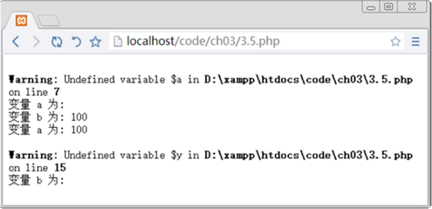
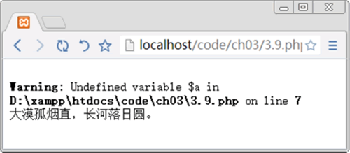

首页 > 编程笔记
PHP变量详解
变量像一个贴有名字标签的空盒子。不同的变量类型对应不同种类的数据，就像不同种类的东西要放入不同种类的盒子。
PHP 中的变量不同于 C 或 Java 语言，因为它是弱类型的。在 C 或 Java 中，需要对每一个变量声明类型，但是在 PHP 中不需要这样做。
PHP 中的变量一般以“$”作为前缀，然后以字母 a~z 的大小写或者“_”下划线开头。
例如，合法的变量名可以是：
PHP 变量的赋值有两种方式，即传值和引用，区别如下：
【实例】
可变变量是一种特殊的变量，它允许动态改变一个变量名称。其工作原理是该变量的名称由另一个变量的值来确定，实现过程就是在变量的前面再多加一个美元符号“$”。
在一个变量前加上“&”，然后赋值给另一个变量，这就是变量的引用赋值。
通过下面的例子对它们进行说明。
1) 在代码的第一部分，$aa 被赋值 bb。若 $aa 相当于 bb，则 $$aa 相当于 $bb。所以当 $$aa 被赋值为“征蓬出汉塞，归雁入胡天。”时，打印 $bb 就得到“征蓬出汉塞，归雁入胡天。”。反之，当 $bb 变量被赋值为“大漠孤烟直，长河落日圆。”时，打印 $$aa 同样得到“大漠孤烟直，长河落日圆。”。这就是可变变量。
2) 在代码的第二部分里，$a 被赋值 100，然后通过“&”引用变量 $a 并赋值给 $b。这一步的实质是，给变量 $a 添加了一个别名 $b。所以打印时，$a 和 $b 都得出原始赋值 100。由于 $b 是别名，和 $a 指的是同一个变量，因此当 $b 被赋值 300 后，$a 和 $b 都得到新值 300。
3) 可变变量其实是允许改变一个变量的变量名，允许使用一个变量的值作为另一个变量的名。
4) 变量引用相当于给变量添加了一个别名，使用“&”来引用变量。其实两个变量名指的是同一个变量。就像是给同一个盒子贴了两个名字标签，两个名字标签指的是同一个盒子。
运行结果为：
在 PHP 中有 6 种基本的变量作用域法则。
那么这些“超全局变量”或“自动全局变量”都有哪些呢？
通过下面的实例介绍全局变量的使用方法和技巧。
出现上述结果是因为函数无法访问外部全局变量，但是在代码间可以访问全局变量。
如果想让函数访问某个全局变量，可以在函数中通过 global 关键字来声明，就是要告诉函数，它要调用的变量是一个已经存在或者即将创建的同名全局变量，而不是默认的本地变量。
通过下面的实例介绍 global 关键字的使用方法和技巧。
另外，读者还可以通过“超全局变量”中的 $GLOBALS 数组进行访问。下面通过实例介绍 $GLOBALS 数组。
通过下面的实例介绍静态变量的使用方法和技巧。
函数外的 echo 语句无法调用函数内的 static $person，它调用的是 $person=20。
showpeople() 函数被执行两次，这个过程中 static $person 的运算值得以保留，并且通过 $person++ 进行了累加。
程序运行结果为：
PHP 有自动回收垃圾的机制，用户也可以手动销毁变量，通常使用 unset() 函数来实现。该函数的语法格式如下：
PHP 中的变量不同于 C 或 Java 语言，因为它是弱类型的。在 C 或 Java 中，需要对每一个变量声明类型，但是在 PHP 中不需要这样做。
PHP 中的变量一般以“$”作为前缀，然后以字母 a~z 的大小写或者“_”下划线开头。
例如，合法的变量名可以是：
$hello
$Aform1
$_formhandler
$168
$!like
PHP 变量的赋值有两种方式，即传值和引用，区别如下：
- 传值赋值：使用“=”直接将赋值表达式的值赋给另一个变量。
- 引用赋值：将赋值表达式内存空间的引用赋给另一个变量。需要在“=”左右的变量前面加上一个“&”符号。在使用引用赋值的时候，两个变量将会指向内存中同一个存储空间，所以任意一个变量的变化都会引起另一个变量的变化。
【实例】
<?php echo "使用传值方式赋值：<br/>"; // 输出 使用传值方式赋值 $a = "风吹草低见牛羊"; $b = $a; // 将变量$a的值赋值给$b，两个变量指向不同的内存空间 echo "变量a的值为".$a."<br/>"; // 输出 变量a的值 echo "变量b的值为".$b."<br/>"; // 输出 变量b的值 $a = "天似穹庐，笼盖四野"; // 改变变量a的值，变量b的值不受影响 echo "变量a的值为".$a."<br/>"; // 输出 变量a的值 echo "变量b的值为".$b."<p>"; //输出 变量b的值 echo "使用引用方式赋值：<br/>"; //输出 使用引用方式赋值 $a = "天苍苍，野茫茫"; $b = &$a; // 将变量$a的引用赋给$b，两个变量指向同一块内存空间 echo "变量a的值为".$a."<br/>"; // 输出 变量a的值 echo "变量b的值为".$b."<br/>"; // 输出 变量b的值 $a = "敕勒川，阴山下"; /* 改变变量a在内存空间中存储的内容，变量b也指向该空间，b的值也发生变化 */ echo "变量a的值为".$a."<br/>"; // 输出 变量a的值 echo "变量b的值为".$b."<p>"; // 输出 变量b的值 ?>本程序运行结果为：
使用传值方式赋值：
变量a的值为风吹草低见牛羊
变量b的值为风吹草低见牛羊
变量a的值为天似穹庐，笼盖四野
变量b的值为风吹草低见牛羊
使用引用方式赋值：
变量a的值为天苍苍，野茫茫
变量b的值为天苍苍，野茫茫
变量a的值为敕勒川，阴山下
变量b的值为敕勒川，阴山下
可变变量与变量的引用
一般的变量很容易理解，但是有两个概念比较容易混淆，就是可变变量和变量的引用。可变变量是一种特殊的变量，它允许动态改变一个变量名称。其工作原理是该变量的名称由另一个变量的值来确定，实现过程就是在变量的前面再多加一个美元符号“$”。
在一个变量前加上“&”，然后赋值给另一个变量，这就是变量的引用赋值。
通过下面的例子对它们进行说明。
<?php
$aa = "bb"; // 定义变量$aa并赋值
$bb = "征蓬出汉塞，归雁入胡天。"; //定义变量$bb并赋值
echo $aa; // 输出变量$aa
echo "<br/>";
echo $$aa; //通过可变变量输出变量$bb的值
$bb = "大漠孤烟直，长河落日圆。"; //重新给变量$bb赋值
echo "<br/>";
echo $$aa;
echo "<br/>";
$a = 100;
$b = 200;
echo $a;
echo "<br/>";
echo $b;
echo "<br/>";
$b = &$a; //变量的引用
echo $a;
echo "<br/>";
echo $b;
$b = 300;
echo "<br/>";
echo $a;
echo "<br/>";
echo $b;
?>
分析：1) 在代码的第一部分，$aa 被赋值 bb。若 $aa 相当于 bb，则 $$aa 相当于 $bb。所以当 $$aa 被赋值为“征蓬出汉塞，归雁入胡天。”时，打印 $bb 就得到“征蓬出汉塞，归雁入胡天。”。反之，当 $bb 变量被赋值为“大漠孤烟直，长河落日圆。”时，打印 $$aa 同样得到“大漠孤烟直，长河落日圆。”。这就是可变变量。
2) 在代码的第二部分里，$a 被赋值 100，然后通过“&”引用变量 $a 并赋值给 $b。这一步的实质是，给变量 $a 添加了一个别名 $b。所以打印时，$a 和 $b 都得出原始赋值 100。由于 $b 是别名，和 $a 指的是同一个变量，因此当 $b 被赋值 300 后，$a 和 $b 都得到新值 300。
3) 可变变量其实是允许改变一个变量的变量名，允许使用一个变量的值作为另一个变量的名。
4) 变量引用相当于给变量添加了一个别名，使用“&”来引用变量。其实两个变量名指的是同一个变量。就像是给同一个盒子贴了两个名字标签，两个名字标签指的是同一个盒子。
运行结果为：
bb
征蓬出汉塞，归雁入胡天。
大漠孤烟直，长河落日圆。
100
200
100
100
300
变量作用域
所谓变量作用域（scope），是指特定变量在代码中可以被访问到的位置。在 PHP 中有 6 种基本的变量作用域法则。
- 内置超全局变量（built-in superglobal variables），在代码中的任意位置都可以访问到。
- 常数（constants），一旦声明，就是全局性的，可以在函数内外使用。
- 全局变量（global variables），在代码间声明，可在代码间访问，但是不能在函数内访问。
- 在函数中声明为全局变量的变量就是同名的全局变量。
- 在函数中创建和声明为静态变量的变量在函数外是无法访问的，但是这个静态变量的值可以保留。
- 在函数中创建和声明的局部变量在函数外是无法访问的，并且在本函数终止时失效。
1) 超全局变量
superglobal 或 autoglobal 可以称为“超全局变量”或“自动全局变量”。这种变量的特性是，无论在程序的任何地方都可以访问到，无论是函数内还是函数外都可以访问到。而这些“超全局变量”就是由 PHP 预先定义好以方便使用的。那么这些“超全局变量”或“自动全局变量”都有哪些呢？
- $GLOBALS：包含全局变量的数组。
- $_GET：包含所有通过 GET 方法传递给代码的变量的数组。
- $_POST：包含所有通过 POST 方法传递给代码的变量的数组。
- $_FILES：包含文件上传变量的数组。
- $_COOKIE：包含 cookie 变量的数组。
- $_SERVER：包含服务器环境变量的数组。
- $_ENV：包含环境变量的数组。
- $_REQUEST：包含用户所有输入内容的数组（包括 $_GET、$_POST 和 $_COOKIE）。
- $_SESSION：包含会话变量的数组。
2) 全局变量
全局变量其实就是在函数外声明的变量，在代码间都可以访问，但是在函数内是不能访问的。这是因为函数默认不能访问在其外部的全局变量。通过下面的实例介绍全局变量的使用方法和技巧。
<?php
$a=100; // 全局变量
// 访问全局变量
function ff()
{
$b=100; // 局部变量
echo "变量a为: $a"; // 访问全局变量
echo "<br/>";
echo "变量b为: $b"; // 访问局部变量
}
ff(); // 函数内访问全局变量和局部变量
echo "<br/>";
echo "变量a为: $a"; //函数外访问全局变量和局部变量
echo "<br/>";
echo "变量b为: $y"; // 访问局部变量
?>
程序运行结果如下图所示。

出现上述结果是因为函数无法访问外部全局变量，但是在代码间可以访问全局变量。
如果想让函数访问某个全局变量，可以在函数中通过 global 关键字来声明，就是要告诉函数，它要调用的变量是一个已经存在或者即将创建的同名全局变量，而不是默认的本地变量。
通过下面的实例介绍 global 关键字的使用方法和技巧。
<?php
$a=100; //全局变量
// 访问全局变量
function ff()
{
$b=100; //局部变量
global $a; //函数内调用全局变量
echo "变量a为: $a"; //访问全局变量
echo "<br/>";
echo "变量b为: $b"; // 访问局部变量
}
ff(); // 函数内访问全局变量和局部变量
?>
程序运行结果为：
变量 a 为: 100
变量 b 为: 100
global $$foo->bar; // 这种写法不支持
global ${$foo->bar}; // 需用大括号来达到效果
另外，读者还可以通过“超全局变量”中的 $GLOBALS 数组进行访问。下面通过实例介绍 $GLOBALS 数组。
<?php
$a=200; // 全局变量
// 访问全局变量
function ff()
{
$b=100; //局部变量
$a=$GLOBALS['a']; // 通过$GLOBALS数组访问全局变量
echo "变量a为: $a"; // 访问全局变量
echo "<br/>";
echo "变量b为: $b"; // 访问局部变量
}
ff(); // 函数内访问全局变量和局部变量
?>
程序运行结果为：
变量 a 为: 200
变量 b 为: 100
3) 静态变量
静态变量只是在函数内存在，在函数外无法访问。但是执行后，其值保留，也就是说这一次执行完毕后，静态变量的值保留，下一次再执行此函数，这个值还可以调用。通过下面的实例介绍静态变量的使用方法和技巧。
<?php
$person = 20;
function showpeople(){
static $person = 5;
$person++;
echo '再增加一位客户, 将会有 '.$person.' 位客户。<br/>';
}
showpeople();
echo $person.'人员。<br/>';
showpeople();
?>
分析：函数外的 echo 语句无法调用函数内的 static $person，它调用的是 $person=20。
showpeople() 函数被执行两次，这个过程中 static $person 的运算值得以保留，并且通过 $person++ 进行了累加。
程序运行结果为：
再增加一位客户, 将会有 6 位客户。
20人员
再增加一位客户, 将会有 7 位客户。
变量的销毁
当用户创建一个变量时，相应地在内存中有一个空间专门用于存储该变量，该空间引用计数加 1。当变量与该空间的联系被断开时，空间引用计数减 1，直到引用计数为 0，则成为垃圾。PHP 有自动回收垃圾的机制，用户也可以手动销毁变量，通常使用 unset() 函数来实现。该函数的语法格式如下：
void unset (变量)
其中，若变量类型为局部变量，则变量被销毁；若变量类型为全局变量，则变量不会被销毁。
<?php
$b= "大漠孤烟直，长河落日圆。"; //函数外声明全局变量
function xiaohui() { //声明函数
$a= 10; //函数内声明局部变量
global $b; //函数内使用global关键字声明全局变量$b
unset ($a); //使用unset()销毁不再使用的变量$a
unset ($b); //使用unset()销毁不再使用的变量$b
echo $a; //查看局部变量是否发生变化
}
xiaohui(); //调用函数
echo $b; //查看全局变量是否发生变化
?>
本程序运行结果如下图所示。变量销毁后再次调用会提示警告信息。

关注公众号「站长严长生」，在手机上阅读所有教程，随时随地都能学习。内含一款搜索神器，免费下载全网书籍和视频。

微信扫码关注公众号